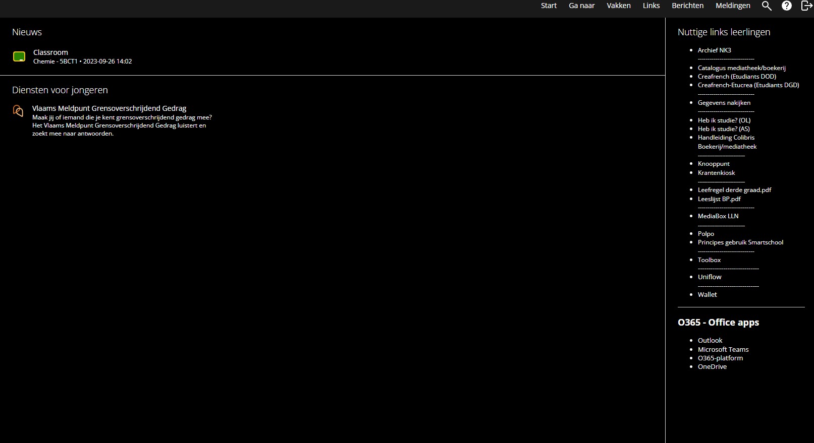

Smartschool Dark Mode | The XIV Project
I have created a Chrome extension that switches Smartschool
to dark mode, to ease your eyes during a long school day.

You can find the extension here: Smartschool Dark Mode
I made it using JavaScript and CSS.
It will be available on the Chrome Web Store,
but for now you can install it manually from the GitHub page.
The extension is still in development,
so if you have any suggestions or feedback,
please let me know!
It might not work perfectly on all pages,
but I will try to improve it over time.